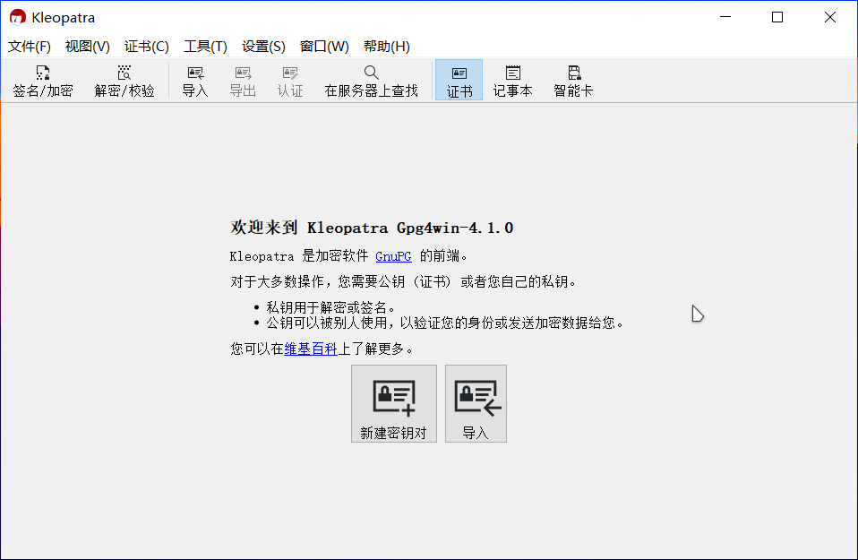
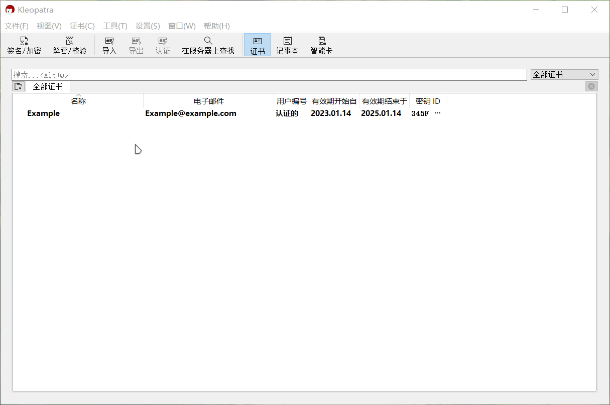
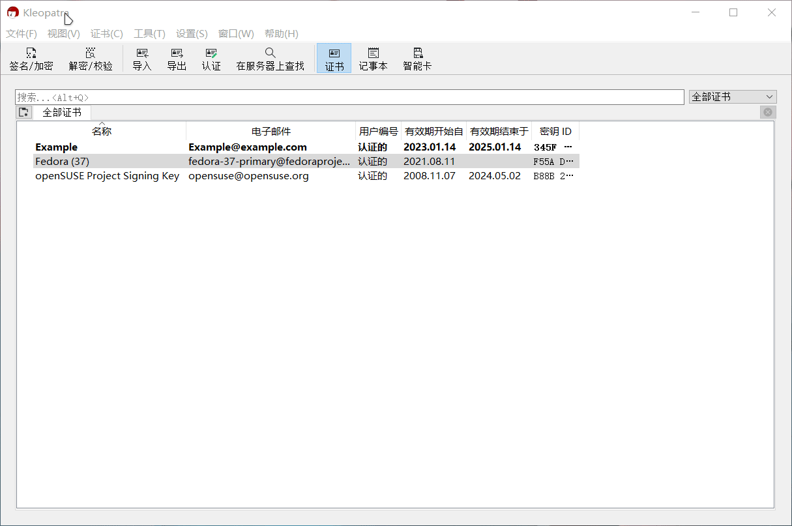

校验文件¶
注意
- 本文主要描述如何快速地校验文件，有关 GPG 的更多信息详见：https://gnupg.org/；
- 有关哈希函数的详细介绍另见：https://en.wikipedia.org/wiki/Hash_function
- 本文假定读者仍在使用 Windows。
虽然 ISO 文件损坏的情况很少发生，但计算 ISO 文件的校验并与官方的校验和进行对比，同时验证一下 ISO 的签名是否被篡改并非多此一举。
如果你觉得检验文件很繁琐，可以直接跳转到下一篇文本
所需的工具：

下载校验文件¶
- 安装镜像：openSUSE Tumbleweed (x86_64, DVD) [约 4.7GB]
- ISO 文件校验文件：ISO Cheksum
- ISO 签名文件：ISO signature
- 安装镜像：Fedora 37 (x86_64, Workstation) [约 2GB]
- ISO 文件校验文件：ISO Cheksum
通过上述链接，你会获得如下三个或两个文件：
Fedora-Workstation-37-1.7-x86_64-CHECKSUM
Fedora-Workstation-Live-x86_64-37-1.7.iso
openSUSE-Tumbleweed-DVD-x86_64-Current.iso
openSUSE-Tumbleweed-DVD-x86_64-Current.iso.sha256
openSUSE-Tumbleweed-DVD-x86_64-Current.iso.sha256.asc
请将它们放置在同一个文件夹之中。
初始化 GnuPG¶
安装¶
你需要先下载适用于 Windows 系统的 Gpg4win，然后根据提示安装 Gpg4win。
注意
- 下载站点会请求你对 Gpg4win 项目进行捐款，你可以使用页面上提示的支付方式进行赞助 Gpg4win 项目的运营；或者选择 0$ 直接下载安装包。
- 如果你不清楚你在做什么，直接遵循 Gpg4win 安装程序的默认推荐值即可。
获取公钥¶
Gpg4win 安装完成后，打开开始菜单，找到并启动名为 Kleopatra 的应用程序：

点击新建密钥对，输入你的名字和邮件地址，点击 OK 确认生成密钥对，例如：

然后点击设置，选择配置 Kleopatra，在 S/MIME 校验中设定好 http 代理地址：
网络代理
你也可以直接在代理软件中开启系统代理。

点击此页面上方的在服务器上查找，然后在弹出的对话框中输入 “openSUSE”，找到并导入 openSUSE Project Signing Key<opensuse@opensuse.org>：
同样地，以相似的步骤导入来自 fedora(37)<fedora-37-primary@fedoraproject.org>1 的公钥。
上述方法是有关于如何从 Kleopatra 内置的 key 服务器地址23获取公钥。当你需要添加某人或项目的公钥的时候，最好向本人直接索取或前往官网查找密钥。导入密钥的时候，记得对比一下导入的密钥指纹（Key fingerprint）和公钥发布者给出的密钥指纹是否吻合。
同时，需要注意的一点是，openSUSE 项目已经将公钥更新为 4096 位 RSA 签名密钥，Tumbleweed 已经采用了新的公钥，但 Leap 当前还在使用旧的密钥。
你可以将下面的 OpenPGP 密钥信息保存至一个纯文本文档，然后再导入至 Kleopatra 中，或者直接前往 openSUSE 官网，你会在页面底部看到公钥下载链接。
pub rsa4096/0x35A2F86E29B700A4 2022-06-20 [SC] [expires: 2026-06-19]
Key fingerprint = AD48 5664 E901 B867 051A B15F 35A2 F86E 29B7 00A4
uid openSUSE Project Signing Key <opensuse@opensuse.org>
-----BEGIN PGP PUBLIC KEY BLOCK-----
Version: GnuPG v2.0.15 (GNU/Linux)
mQINBGKwfiIBEADe9bKROWax5CI83KUly/ZRDtiCbiSnvWfBK1deAttV+qLTZ006
090eQCOlMtcjhNe641Ahi/SwMsBLNMNich7/ddgNDJ99H8Oen6mBze00Z0Nlg2HZ
VZibSFRYvg+tdivu83a1A1Z5U10Fovwc2awCVWs3i6/XrpXiKZP5/Pi3RV2K7VcG
rt+TUQ3ygiCh1FhKnBfIGS+UMhHwdLUAQ5cB+7eAgba5kSvlWKRymLzgAPVkB/NJ
uqjz+yPZ9LtJZXHYrjq9yaEy0J80Mn9uTmVggZqdTPWx5CnIWv7Y3fnWbkL/uhTR
uDmNfy7a0ULB3qjJXMAnjLE/Oi14UE28XfMtlEmEEeYhtlPlH7hvFDgirRHN6kss
BvOpT+UikqFhJ+IsarAqnnrEbD2nO7Jnt6wnYf9QWPnl93h2e0/qi4JqT9zw93zs
fDENY/yhTuqqvgN6dqaD2ABBNeQENII+VpqjzmnEl8TePPCOb+pELQ7uk6j4D0j7
slQjdns/wUHg8bGE3uMFcZFkokPv6Cw6Aby1ijqBe+qYB9ay7nki44OoOsJvirxv
p00MRgsm+C8he+B8QDZNBWYiPkhHZBFi5GQSUY04FimR2BpudV9rJqbKP0UezEpc
m3tmqLuIc9YCxqMt40tbQOUVSrtFcYlltJ/yTVxu3plUpwtJGQavCJM7RQARAQAB
tDRvcGVuU1VTRSBQcm9qZWN0IFNpZ25pbmcgS2V5IDxvcGVuc3VzZUBvcGVuc3Vz
ZS5vcmc+iQI+BBMBAgAoBQJisH4iAhsDBQkHhM4ABgsJCAcDAgYVCAIJCgsEFgID
AQIeAQIXgAAKCRA1ovhuKbcApKRrEACJMhZhsPJBOkYmANvH5mqlk27brA3IZoM4
8qTzERebzKa0ZH1fgRI/3DhrfBYL0M5XOb3+26Ize0pujyJQs61Nlo1ibtQqCoyu
dvP/pmY1/Vr374wlMFBuCfAjdad4YXkbe7q7GGjo6cF89qtBfTqEtaRrfDgtPLx/
s9/WXLGo0XYqCCSPVoU66jQYNcCt3pH+hqytvntXJDhU+DveOnQCOSBBHhCMST3E
QvriN/GnHf+sO19UmPpyHH0TM5Ru4vDrgzKYKT/CzbllfaJSk9cEuTY8Sv1sP/7B
Z7YvOE0soIgM1sVg0u3R/2ROx0MKoLcq7EtLw64eE+wnw9bHYZQNmS+J/18p7Bo8
I7e+8WRi+m/pus5FEWsIH1uhxKLgJGFDTHHGZtW+myjnUzXVIkpJGrKoolzYjHdK
lRYM2fVuNI1eq6CZ6PFXg2UxovVczSnGMO33HZE09vpgkRDBrw1vF0o/Wnm02kig
V6xYHk5wJx8vL74wPvCbw73UNT9OSdxYAz7JPqGOD6cpKe7XcAH2sYmlGpggAIUz
Rq/lROEF5lx4SxB838JU4ezxD++BJXfBTE8JZmlGscXv74y9nCtSOZza8KOKj8ou
WRl739FMnx9jRd7HHj3TIyymoveODnZ7f3IElyyFsjBW3XuQ9XfpZrIkwHuaZV5M
6q2h+hgWNQ==
=nMh8
-----END PGP PUBLIC KEY BLOCK-----
验证签名¶
点击 Kleopatra 菜单栏上的解密/校验，选择对应的 sha256 文件或者 CHECKSUM 文件，进行校验：

校验哈希值¶
注意
- 请不要修改 SHA256 值，直接复制黏贴即可；
- 文件名必须和要校验的文件的文件名保持一致；
- sha256 文件必须和要校验的文件处于同一个文件夹中。
此处推荐使用 7-zip 对文件进行校验。
选中已下载的 sha256 文件，在鼠标右键菜单中，使用 CRC SHA 菜单中的测试压缩包：校验和功能，如下：
注意
如果你没有看到相似的选项，你可能需要在 7-zip 的设置（工具→选项→7-Zip）中，取消勾选层叠右键菜单。

对于 Fedora-Workstation-37-1.7-x86_64-CHECKSUM，它的本质是一个纯文本文件，你可以使用编辑器打开它，然后把其中你需要的部分复制黏贴到一个新建的，以 sha256 为后缀名的纯文本文件中，例如：
# Fedora-Workstation-Live-x86_64-37-1.7.iso: 2037372928 bytes
SHA256 (Fedora-Workstation-Live-x86_64-37-1.7.iso) = 9c69005baafdba6e4ff04c1cf4779121b7fc9aacab80b4633394576da336a515
然后将如上的文件修改为（SHA256 值 + 文件名）：
9c69005baafdba6e4ff04c1cf4779121b7fc9aacab80b4633394576da336a515 Fedora-Workstation-Live-x86_64-37-1.7.iso
-
Fedora 37 的公钥 ↩
-
除了 Ubuntu 的密钥服务器，你可以前往 https://keys.openpgp.org/ 下载公钥。 ↩
创建日期: 2023-01-15 00:52:05